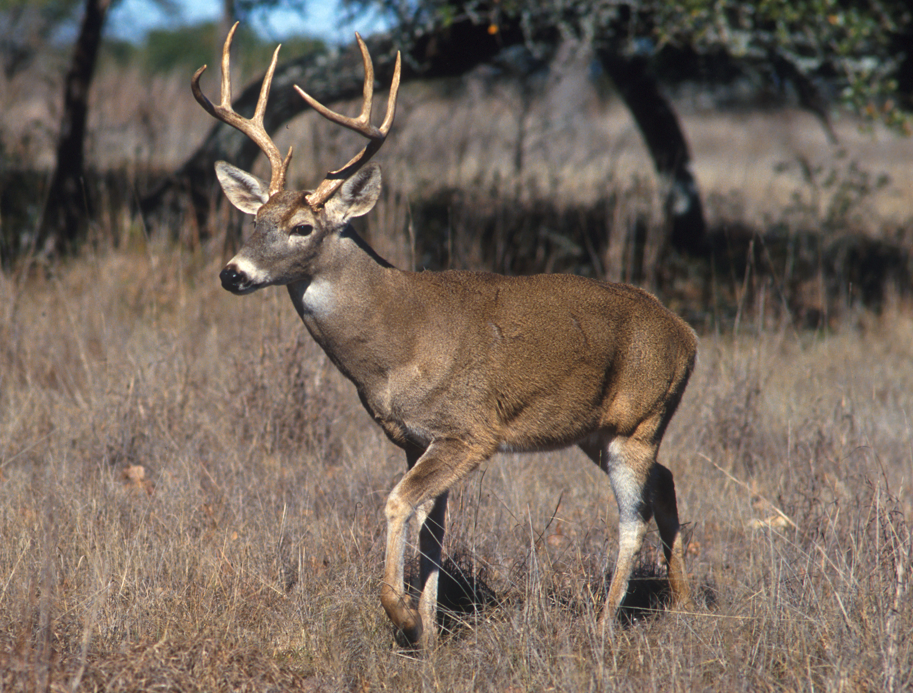
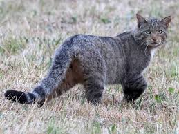

Coyote
El coyote habita en diferentes regiones de Hidalgo y es conocido por su gran adaptación.

Venado Cola Blanca
Es uno de los mamíferos más representativos de las zonas boscosas.

Gato Montés
El gato montés es un felino de tamaño mediano con patas fuertes y pelaje denso.